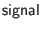

Most approaches to ``AJAX''-style coding involve imperative manipulation of the DOM tree representing an HTML document's structure. Ur/Web follows the functional-reactive approach instead. Programs may allocate mutable sources of arbitrary types, and an HTML page is effectively a pure function over the latest values of the sources. The page is not mutated directly, but rather it changes automatically as the sources are mutated.
More operationally, you can think of a source as a mutable cell with facilities for subscription to change notifications. That level of detail is hidden behind a monadic facility to be described below. First, there are three primitive operations for working with sources just as if they were ML ref cells, corresponding to ML's ref, :=, and ! operations.
Only source creation and setting are supported server-side, as a convenience to help in setting up a page, where you may wish to allocate many sources that will be referenced through the page. All server-side storage of values inside sources uses string serializations of values, while client-side storage uses normal JavaScript values.
Pure functions over arbitrary numbers of sources are represented in a monad of signals, which may only be used in client-side code. This is presented to the programmer in the form of a monad  , each of whose values represents (conceptually) some pure function over all sources that may be allocated in the course of program execution. A monad operation denotes the identity function over a particular source. By using on a source, you implicitly subscribe to change notifications for that source. That is, your signal will automatically be recomputed as that source changes. The usual monad operators make it possible to build up complex signals that depend on multiple sources; automatic updating upon source-value changes still happens automatically. There is also an operator for computing a signal's current value within a transaction.
A reactive portion of an HTML page is injected with a tag, which has a signal-valued attribute .
The semantics of <dyn> tags is somewhat subtle. When the signal associated with such a tag changes value, the associated subtree of the HTML page is recreated. Some properties of the subtree, such as attributes and client-side widget values, are specified explicitly in the signal value, so these may be counted on to remain the same after recreation. Other properties, like focus and cursor position within textboxes, are not specified by signal values, and these properties will be reset upon subtree regeneration. Furthermore, user interaction with widgets may not work properly during regeneration. For instance, clicking a button while it is being regenerated may not trigger its onclick event code.
Currently, the only way to avoid undesired resets is to avoid regeneration of containing subtrees. There are two main strategies for achieving that goal. First, when changes to a subtree can be confined to CSS classes of tags, the dynClass pseudo-attribute may be used instead (see Section 8.5), as it does not regenerate subtrees. Second, a single <dyn> tag may be broken into multiple tags, in a way that makes finer-grained dependency structure explicit. This latter strategy can avoid ``spurious'' regenerations that are not actually required to achieve the intended semantics.
Transactions can be run on the client by including them in attributes like the attribute of , and GUI widgets like have attributes that can be used to connect them to sources, so that their values can be read by code running because of, e.g., an event. It is also possible to create an ``active'' HTML fragment that runs a to determine its content, possibly allocating some sources in the process: